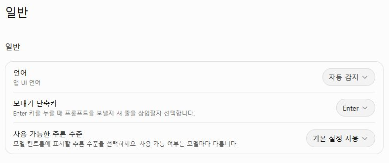
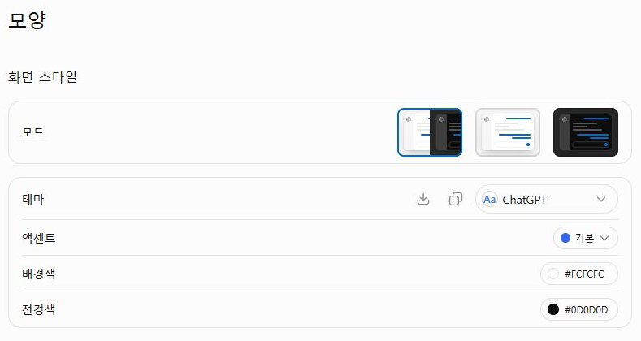
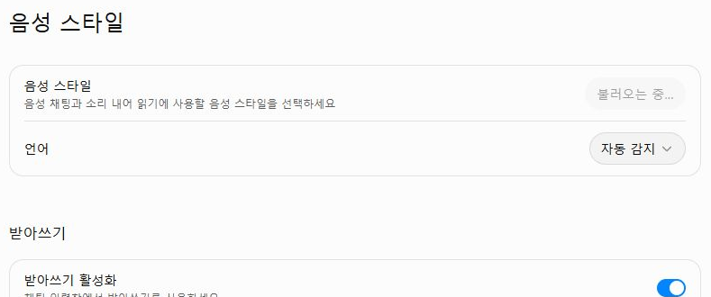
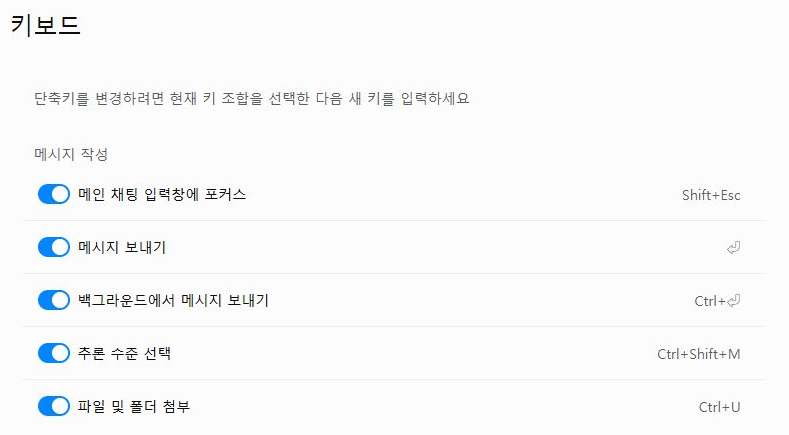

실제 조작 화면을 순서대로 연결했습니다. 아래 사진을 누르면 원본 크기로 열립니다.Bravo AI Life 기본 사용법 · 1차시로 돌아가기
STEP 07
언어·화면·음성·키보드 설정 살펴보기
수업 화면이 다르게 보이거나 조작이 어려울 때 어디에서 확인할지 익힙니다.
일반: 언어와 보내기 단축키
언어에서 표시 언어를 확인합니다. 보내기 단축키가 Enter인지 확인하고, 줄바꿈과 전송을 헷갈리면 화면의 화살표로 보내세요.
모양: 밝게 또는 어둡게
시스템 설정을 따를지 밝게 또는 어둡게 표시할지 고릅니다. 빔프로젝터에서는 학생이 읽기 편한지 실제 화면을 보고 정하세요.

음성 스타일과 언어
목소리와 언어 항목을 확인합니다. 대화 목소리 선택과 텍스트 입력창의 마이크 받아쓰기는 다른 기능입니다.

키보드: 자주 쓰는 조작 확인
키보드 목록에서 새 채팅이나 메시지 관련 단축키를 찾아보세요. 자신의 화면에 표시된 키 조합을 기준으로 하나만 연습합니다.
